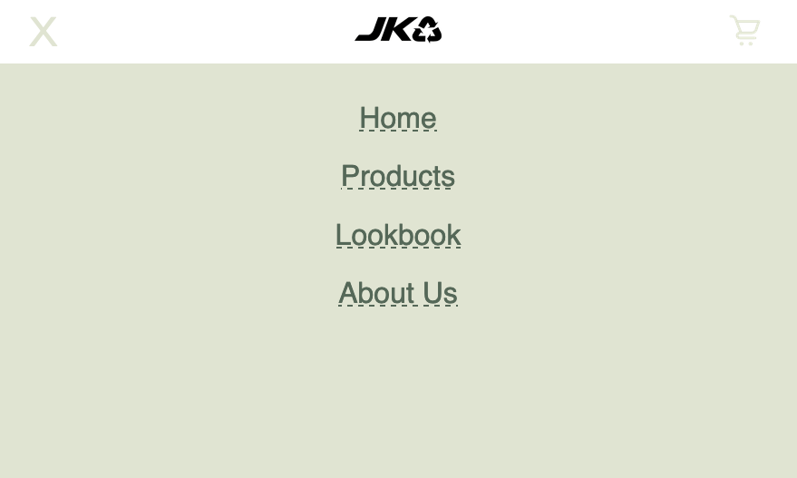
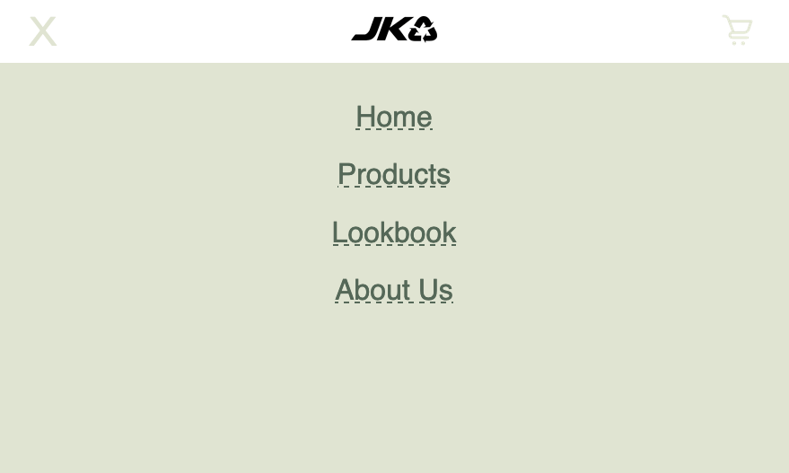

Portfolio website
Her kan du se hvordan jeg har lavedet min portforlio-website. Jeg vil tage dig gennem min proces.
Her kan du se hvordan jeg har lavedet min portforlio-website. Jeg vil tage dig gennem min proces.


 


Jeg startede med at designe min hjemmeside i Xd.
Jeg brugte Adobe Color Wheel til at lave min farvepalette. Der er stor kontrast mellem den røde og blå sammentidig med at begge fraver er rolig. Den sidste farve der indgår i mit design er sand-farven som står skarpt frem på blå baggrund.
Til overskrifterne og knapper har jeg valgt at bruge: effra. Det har jeg valgt fordi den er enkelt og uden seriffer. Når jeg sammentidig har beslutet, at alle bogstaver skal være stort og i en stor skriftstørrelse, så fremstår overskrifterne kraftige og er uundgålige at se.
Alt det almindelige tekst har jeg valgt en font med seriffer. Det gør teksten mere læsevenlig. Fonten jeg har valgt er Prestige Elite Std.


Jeg valgte at designe et icon som skulle ilostraere at man kan scholle gennem billederne på projekt-siderne.
Jeg valgte at lave filen i SVG-format da den er uenlig skalerbart og fylder mindre end et billede.
Før jeg startede med at kode lavede jeg et layoutdiagram. Det har hjulpet mig med at holde stroktur i min kode.


Jeg har lavede flere forskelige CSS-effekter. F.eks. har jeg lavedet en hover effekt over links. Samme effekt har jeg også brugt i menuen. Jeg har også lavedet et hover effekt på knapperne.
Jeg har valgt at definere mine tre primære farver i starten af mit CSS-dokument. På den måde skal kan jeg nøjes med at skrive var(--sand) i stedet for #E6DAB7.
Man kunne også forstille sig at jeg på et tidspunkt vil ændre nyansen lidt, så skal jeg kun ændre hex-koden et sted.
På denne hjemmeside har jeg brugt JavaScript til at at lave en burger menu. Den er kun synlig når man ser hjemmesiden fra en telefon.

Du har nok alderree dannet dig et intryk af min portfolio-hjemmeside. Men du er velkommen til at kigge vidre rundt.
Se forsiden af hjemmesiden